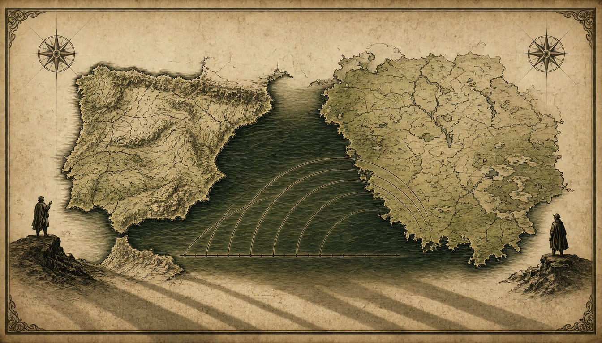
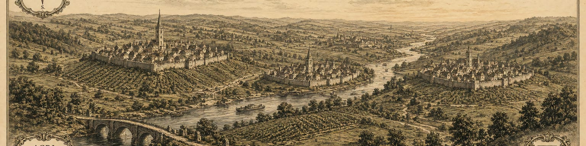
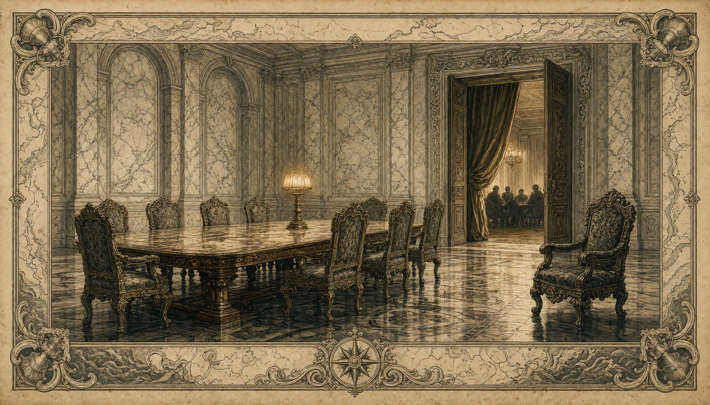
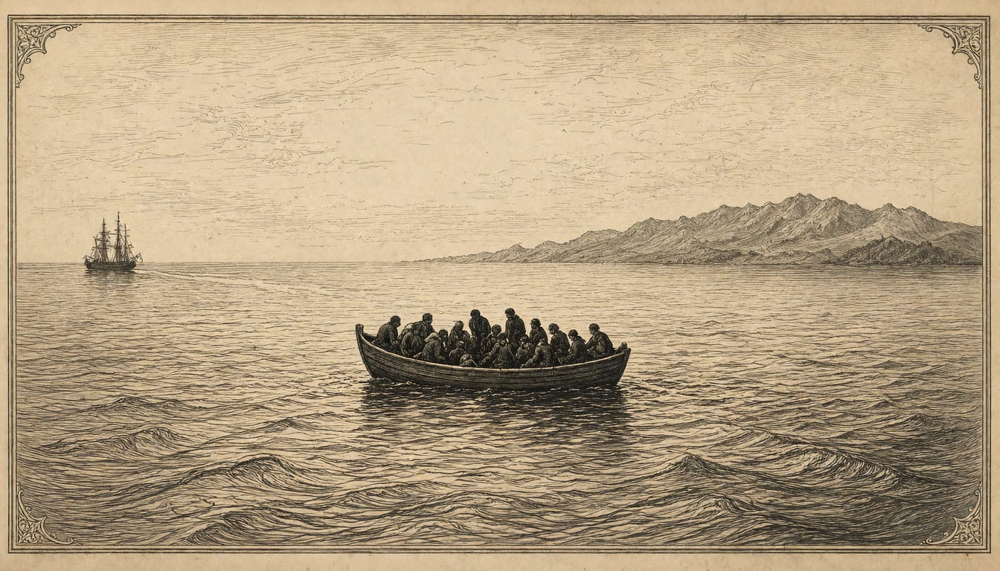
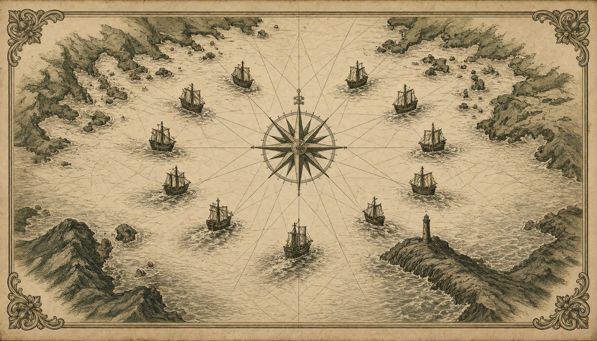
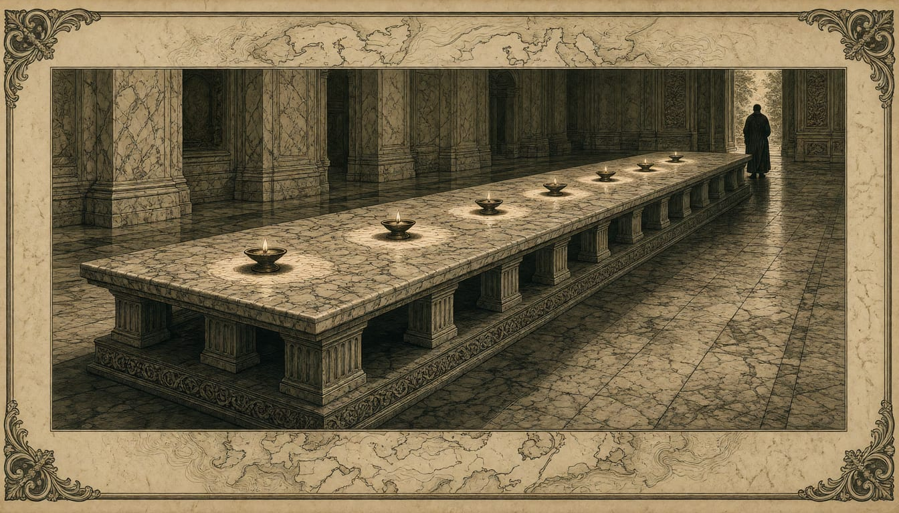
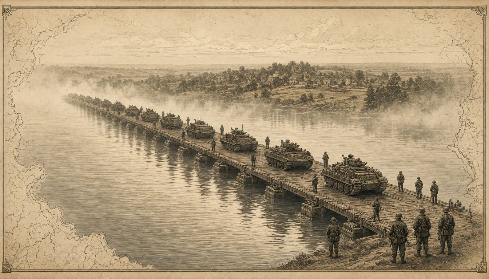

Portugal rebukes NATO chief Rutte over 'flippant' missile remarks
The foreign ministry in Lisbon objected to remarks suggesting the government downplays the Russian threat, as Spain stayed silent.

Europa Patriarum
A Europe of nations.

The foreign ministry in Lisbon objected to remarks suggesting the government downplays the Russian threat, as Spain stayed silent.

Karasin called French plans of attendance wishful thinking, while Kallas says any agreement the EU is not party to will not be implemented. Costa has put EU participation on the agenda of Friday's informal leaders' meeting in Dublin.

The Greek coastguard rescued 46 survivors from two boats south of Kali Limenes, and Frontex teams picked up about 87 more on Monday. Deputy Migration Minister Sevi Voloudaki says the migration minister will present an initiative with other member states within days.

Denmark, Estonia, Finland, Iceland, Latvia, Lithuania, the Netherlands, Norway, Sweden and the United Kingdom sign the agreement, which keeps the forces under national authority. The United States is not part of it.

Opinion
Brussels wants one rulebook for addictive design, replacing laws that seven nations are already passing. A floor of minimum harmonisation we could accept. A regulation that wipes national law hands power to an institution no European voter can remove.
Opinion
An 86-vote sanctions act sat unused after an October waiver, and 400 million dollars authorized by Congress was delayed. A Congress that can be read around is not a guarantee; only national statutes are.

More than 6,000 soldiers of the 10th Panzer Division take part from 6 November to 3 December, days after Kaunas and Pistorius signed a cooperation pact in Munich on 4 November.
The French justice minister made the claim at a Barcelona forum, backing Édouard Philippe for 2027 and calling for a pro-European candidate who would turn Europe into one of power rather than discussion.
Opinion
Consumer law is the one power the treaties left fully in national hands, and eight parliaments are right to use it while the Commission's cases sit unresolved. National rules should be a floor Brussels must match, not an obstacle it must erase.